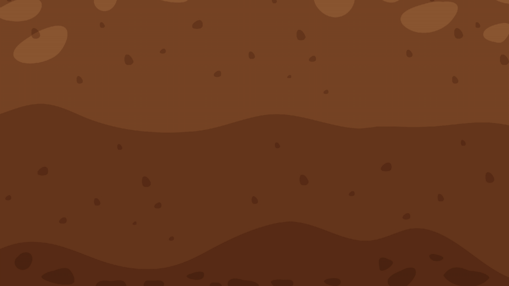
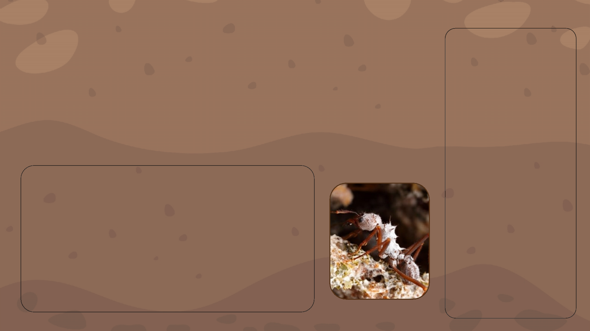
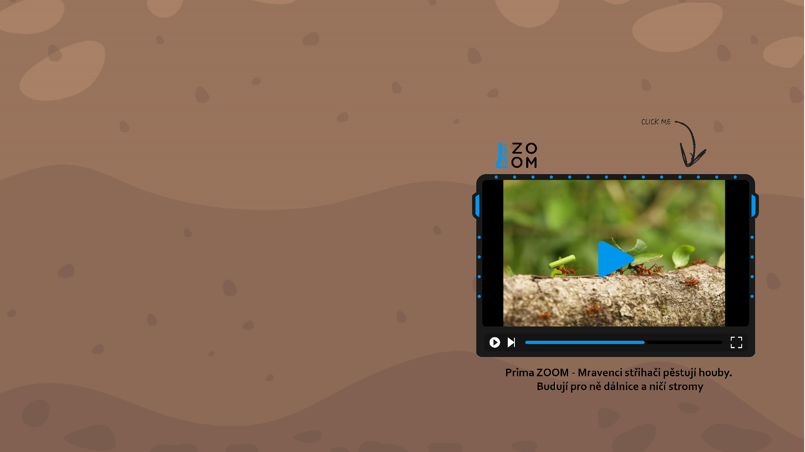
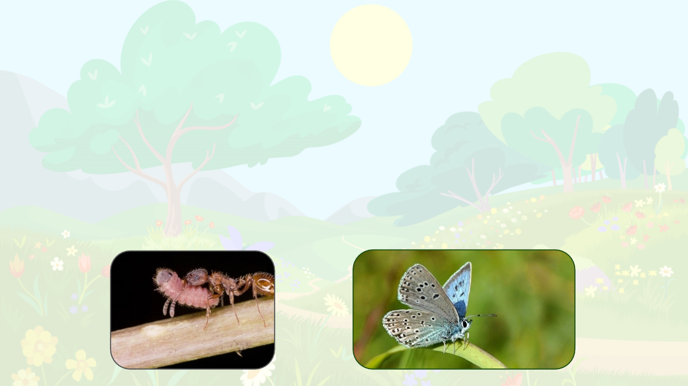

Mravenci jsou hlavními predátory termitů, jsou to mrchožrouti a predátoři. Především mravenčí larvy potřebují stravu
bohatou na bílkoviny.
Je to velmi starý vztah, mravenci lovící termity byli nalezeni i v antaru starém 130 milionů let.
Tento vztah predátor – kořist se vyskytuje pouze tam, kde se vyskytují mravenci a termiti zároveň, tedy hlavně v ropických
oblastech Afriky, Austrálie a Jižní Ameriky. Nejde o konkrétní druh, nýbrž o celou skupinu čítající několik tisíc druhů, uvádíme
tedy příklady těch známějších a i naše popisování se nedrží konkrétně těchto druhů ale jevů vyskytujících se napříč celou
touto rozsáhlou skupinou.
Vzhledem k ozšiřování termitů jako invazního druhu v vropě je možné, že by se mohl v ohledné době stát poměrně běžným i
zde.
Mravenci x Termiti
-Úvod

Mravenci x Termiti
-Úvod
mravenec matabele (Megaponera analis); mravenec argentinský (Linepithema humile)
kmen členovci; podkmen vzdušnicovci, třída hmyz; řád blanokřídlí, rod mravenci (Formica)
proměna dokonalá
x
termit anoplothermes (Anoplothermesbanksi)
kmen členovci; podkmen vzdušnicovci, třída hmyz; řád všekazi; podřád termiti
proměna dokonalá
Typvztahu:
Predace
Dúsledky:
Inprogres...

Průzkumníci identifikují přibližnou lokaci termitiště pomocí termitích feromonů, poté se vrací do mraveniště
pro posily k toku. Do útoku se zapojují jak vojáci, tak dělníci. Vojáci vedou skupinu k ermitišti pomocí feromonů.
„Armáda“ začíná hlavní útok, větší vojáci svými kusadly vytváří otvor v ermitišti, menší dělnici lezou dovnitř a
útočí na komory s larvami.
Po zpozorování mravenčího útoku začnou termití vojáci narážet hlavou do země, což slouží jako varovný
signál. Zároveň začnou produkovat feromony, kterými varují vojáky i z iných částí termitiště.
Termití vojáci jsou větší a mají větší kusadla, nicméně mravenci mají výhodu překvapivého útoku, protože se
prokousali nový vstup. Zároveň mravenci na rozdíl od termitů vykazují chování společenského boje kdy jeden
druhému „kryjí záda“ a jako skupina tedy prioritizují boj s těmi termity, kteří zrovna aktivně útočí na nějakého
mravence. Toto chování termiti ve většině případů nevykazují a jsou tak v boji méně efektivní.
Dělníci pronikají relativně hluboko do termitiště, kde loupí termití vajíčka a nymfy. Termití vojáci jsou nuceni
rozdělovat své síly kvůli útokům na vstupy od mravenčích průzkumníků a tak nikdy nezaútočí plným počtem na
místo, kde skutečně dochází k hlavnímu útoku.
Po konci bitvy nastupují „zdravotníci“, mravenci tedy odnášejí i své raněné.
Mravenci x Termiti
-Hlavní útok

Když mravenci dorazí k ermitišti vyšlou několik dělníku jako průzkum. Ten trvá zhruba hodinu.
V momentě kdy průzkumníci najdou nějaký vchod do termitiště, nevracejí se po nejkratší trase,
ale po nejrychlejší. Tedy hledají cestu takovým terénem, aby mohli zvýšit tempo a ušetřit tak
celkovou rychlost. Tímto způsobem ušetří okolo 35% doby ku nejkratší trase.
Průzkumníci, si po návratu k hlavní skupině „naverbují“ skupinku mravenců (několik menších
stovek) a dovedou je zpět ke vchodu, který našli. Poté se rychle přeskupí, tedy asi půl až jeden
metr před cílem počkají než dojdou poslední. Útočí na vstup, aby odvedli pozornost od
hlavního útoku.
Mravenci x Termiti
-Průzkumníci

Mravenci nemají žádné vyčleněné zdravotníky. Po konci bitvy
začnou zranění mravenci vypouštět feromon, díky němuž je
najdou ostatní. Většinou raněné odnášejí spíše větší vojáci,
nicméně i menší dělníci se často zapojují.
Když mravenec není příliš zraněný, což znamená, že má více
než dvě nohy a spolupracuje při „nakládání“, mravenci ho
odnesou zpět do mraveniště.
Pokud je rána infikována ošetřují ji slinami, které obsahují 112
sloučenin z čehož polovina má antibakteriální nebo hojivé
účinky, význam zbylé poloviny zůstává neznámý
V xperimentech izolovali zraněné vojáky tedy se jim nedostalo
léčby a 90 % z ich zemřelo, s šetřením je to 22 %.
Mravenci x Termiti
-Zdravotníci

Mravenci „střihači" x Pečárkovité houby

Attinimravenci
kmen:členovci;podkmen:vzdušnicovci,třída:hmyz;
řád:blanokřídlý,rod:mravenci(Formica)
x
Čeleďpečárkovitýchhub
říše: houby; třída: vřeckovýtrusné, čeleď:pečárkovité
(ve skutečnosti 47 druhů s odobnou symbiózou)
Typvztahu:
obligátní symbióza
(oboustranná úplná závislost
Důsledkyvztahu:
1)Přežití druhů hub, které se
mimo tento symbiotický
vztah nevyskytují
2)Přežití mravenců díky
dostatku jejich výhradní
potravy
3)Díky sbírání rostlinného
materiálu z živých stromů
může v okolí mraveniště dojít
kezničení populace stromů,
které jsou postupně obrány o
všechny listy, kvůli čemuž
umírají
Mravenci „střihači" x Pečárkovité houby

Mravenci x Modrásci
Typvztahu:
parazitismus/predace
Důsledkyvztahu:
1) Zvýšená šance na přežití
housenek modrásků Phengaris
(po provedení pokusného
oddělení housenky od mravenců
se šance snížila o 80-90%)
2) Dojde k úbytku potravy pro
mravenčí larvy nebo jejich přímé
likvidaci, díky čemuž se při
větším počtu housenek v jednom
mraveništi může narušit jeho
vnitřní rovnováha a chod.
mravenec žahavý (Myrmica rubra)
kmen: členovci; podkmen: vzdušnicovci, třída: hmyz; řád: blanokřídlí; rod: mravenci
(Formica)
proměna dokonalá
X
rod modrásků Phengaris (Phengaris)
kmen: členovci; podkmen: vzdušnicovci, třída: hmyz; řád: motýli; {skupina denní}
proměna dokonalá
Zajímávásvíce?
Doporučujemerozkliknoutodkaz,kdesemůžetedozvědětdalšíinformace.
https://bohemiaorientalis.cz/o-modrascich-a-mravencich/

Mravenci x Modrásci
Jakvztahprobíhá?
Po třetím svléknutí se housenky modrásků rodu Phengaris prokoušouven ze semeníku, kde trávilyposlední dny
svého života. Začnou produkovat feromony podobné feromonům mravenců, díky kterým je mravenci najdou a
zanesoudomraveniště.Tamvolíčtyřirůznéstrategie:
1) Chovajísejakoparazitéanechávajísemravenci,kteříjepravděpodobněpovažujízasvépotomstvokrmit.
2) Začnoupožíratlarvyhostitelskýchmravenců.
3) Střídavědělajíobojejižzmíněné.
4) Některé druhy(Phengarisalconf.rebeli)dokonce dokážístridulovat(třením nohou vytvářet cvrkavý zvuk) jako
mravenčíkrálovny,díkyčemužsejimdostávávýbornéobsluhy.
Podospěníhousenkykekoncitohotoživotníhostádiavylezezmraveniště,zakuklíseazkuklyvylétnemotýl.
PročMravencizlomyslnéhousenkyhostí?
Otom,pročhousenkymravencetakpřitahujísemůžemezatímspíšedohadovat,výzkumyalepotvrdily,žemravencizachraňujíhousenkyv
případěnebezpečípřednostně.Některéteoriehovoříojižzmíněnézáměnězavlastnípotomstvodíkyferomonům,kterésihousenkyv
průběhuevolucevytvořily.Jinéteoriepokládajízadůvodsladkoušťávu,kterouhousenkyvylučují(podobnoušťávuvyměšujíimšice,ale
vytváříjizesvérostlinnépotravy,nezpotravypromravenčílarvy,kteroumodráscipřiprocesutráveníoberouovětšinublahodárnýchlátek).
Nakaždýpádsenejednáovděčnéhohosta,ukteréhonedokážímravenciodhalitskutečnéúmysly.

ZdrojekMravencixTermiti:
KRONAUER,Daniel.In:Antwiki.com[online].2020[cit.2024-05-01].Dostupnéz:
https://www.antwiki.org/wiki/Megaponera_analis
Ants Attack Termite Mounds | Natural World: Ant Attack | BBC Earth [online]. [cit. 2024-04-22]. Dostupné z:
https://www.youtube.com/watch?v=0ZEGWWkpbX8
Termites vs Ants: Who’s King of the Hill? | Wild to Know [online]. 2020 [cit. 2024-04-22]. Dostupné z:
https://www.youtube.com/watch?v=nESFGpQH6-U
Mravenci vs Termiti [online]. 2019 [cit. 2024-04-22]. Dostupné z: https://sciencemag.cz/mravenci-vs-termiti/
LANGIN, Katie. SCIENCE MAGAZINE AAAS. Ants treat comrades injured on the field of battle.Science magazine AAAS online].
2018 [cit. 2024-04-22]. Dostupné z: https://www.youtube.com/watch?v=LESPHl8rOvI
KOUDELKA, David. ČESKO ŽIVĚ.CZ.Mravenci se po boji vzájemně ošetřují. Používají k tomu i antibiotika online]. 2024 [cit. 2024-
04-23]. Dostupné z: https://www.ceskozive.cz/2024/01/05/mravenci-se-po-boji-vzajemne-osetruji-pouzivaji-k-tomu-i-
antibiotika/
Megaponera. In:Wikipedia: the free encyclopedia online]. San Francisco (CA): Wikimedia Foundation, 2001- [cit. 2024-04-23].
Dostupné z: https://en.wikipedia.org/wiki/Megaponera
SMITH, Kiona N. In wars with termites, ants rescue and care for their wounded. ArsTechnica [online]. 2018 [cit. 2024-05-01].
Dostupné z: https://arstechnica.com/science/2018/02/in-wars-with-termites-ants-rescue-and-care-for-their-wounded/

ZdrojekMravencixModrásci:
OmodráscíchroduMaculinea[online].In:.[cit.2024-05-01].Dostupnéz:https://bohemiaorientalis.cz/o-modrascich-rodu-
maculinea-2/
Tom Murray. Myrmica rubra. In: Antwiki.com [online]. [cit. 2024-05-01]. Dostupné z: https://antwiki.org/wiki/Myrmica_rubra
O modráscích a mravencích [online]. 2022 [cit. 2024-05-01]. Dostupné z: https://bohemiaorientalis.cz/o-modrascich-a-
mravencich/

ZdrojekMravencixMycéliumPečárkovitých:
Leafcutter Ants - the First Agriculture online]. 2006 [cit. 2024-04-23]. Dostupné z: https://youtu.be/RH3KYBMpxOU?si=G8E9CGT_RtCpswtB
PBS EONS.When Ants Domesticated Fungi online]. 2022 [cit. 2024-04-23]. Dostupné z: https://www.youtube.com/watch?v=-XuPtW8lBCM
SEMECKÝ, Petr.Mravenci střihači pěstují houby. Budují pro ně dálnice a ničí stromy online]. 2022 [cit. 2024-04-23]. Dostupné z: https://zoom.iprima.cz/priroda/mravenci-
strihaci
Mechanismy začlenění myrmekofilů do hostitelské kolonie online]. Praha, 2017 [cit. 2024-04-23]. Dostupné z:
https://dspace.cuni.cz/bitstream/handle/20.500.11956/91813/120279697.pdf?sequence=1 . Diplomová práce. Karlova Univerzita.
